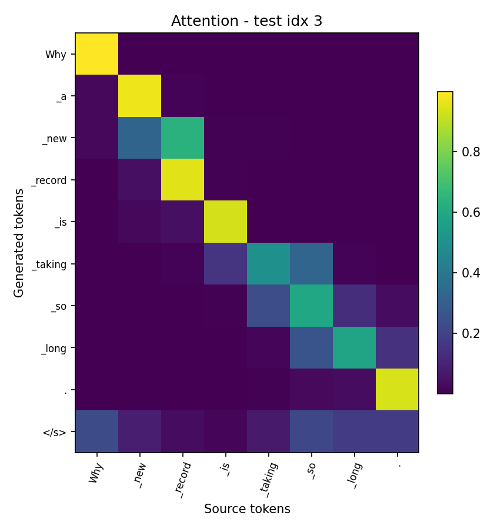
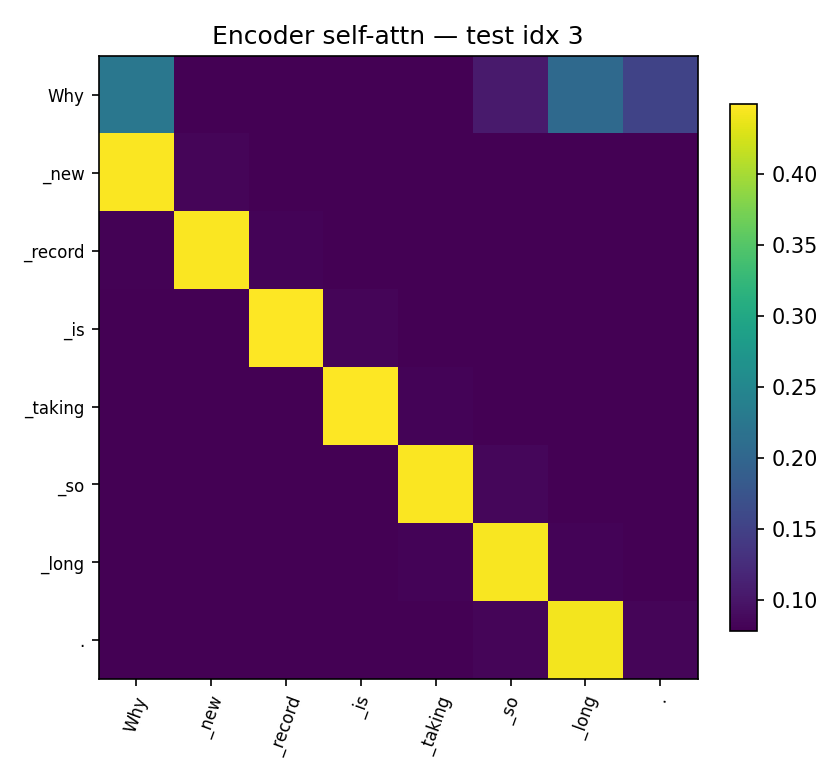
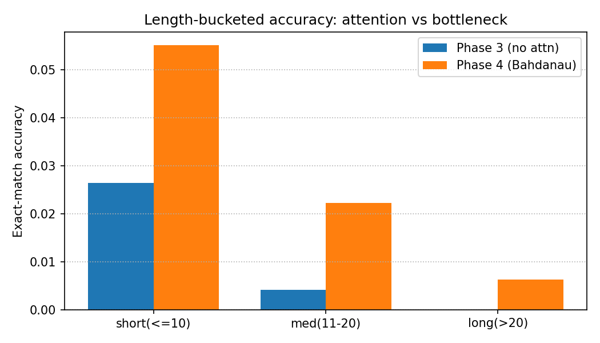

Grammatical Error Correction on C4_200M
Bag-of-Words → LSTM → Attention → Transformer
Abdullah Ahmed (202200206) · Ibrahim Hanafy (202200518)
CIE 555 — Neural Networks and Deep Learning
Instructor: Dr. Ibrahim Swelam · TAs: Aya Abdelaziz, Mahmoud Farahat
The Problem: Grammatical Error Correction
Rewrite an ungrammatical sentence into its corrected form.
Input (corrupted): "She go to school yesterday and learning many thing."
Output (corrected): "She went to school yesterday and learned many things."
- Errors: tense, agreement, articles, plurals, punctuation, spelling.
- Output is a whole new sentence — a sequence-to-sequence task.
2 / 15
The Data: C4_200M Subset
Clean web text automatically corrupted into (corrupted, clean) pairs.
| Split | Pairs |
|---|
| Train | 850,000 |
| Validation | 50,000 |
| Test | 100,000 |
| Total | 1,000,000 |
- 16k Byte-Level BPE tokenizer.
- Max length 64 tokens.
- Same splits + tokenizer for every model — no leakage.
3 / 15
Four Models of Increasing Power
| # | Model | What it adds |
|---|
| 1 | Bag-of-Words (TF-IDF) | Baseline — only detects errors |
| 2 | LSTM encoder–decoder | First corrector; fixed-size bottleneck |
| 3 | LSTM + Bahdanau attention | Decoder re-queries the full source |
| 4 | Transformer | Self-attention; no recurrence |
Model 1 detects. Models 2–4 correct.
4 / 15
Model 1 — Bag-of-Words Baseline
- Each pair → two samples: corrupted = ungrammatical (0), clean = grammatical (1).
- Features: TF-IDF, unigrams + bigrams, 50k vocab (fit on train only).
- Classifiers: Logistic Regression & Linear SVM.
Result: ~62% detection accuracy — barely above 50% chance.
Surface word statistics cannot solve GEC → need seq2seq.
5 / 15
Model 2 — LSTM Encoder–Decoder
- BiLSTM encoder compresses the input into one 512-dim state.
- LSTM decoder generates the correction token by token.
- Teacher forcing 1.0→0.5; 19.55M parameters; 3 epochs.
- Test GLEU 0.213 (greedy) — the weakest corrector.
The bottleneck: after the first step the decoder never "sees" the
source again — everything is squeezed into 512 numbers.
6 / 15
Model 3 — LSTM + Bahdanau Attention
Keep all encoder states; the decoder attends to them every step.
score(s,h) = v·tanh(W·s + W·h) →
α = softmax(score) → context = Σ αᵢ·hᵢ
- Removes the bottleneck; alignment weights are interpretable.
- Padding masked with −∞ before softmax. 29.06M parameters.
The decisive jump: GLEU 0.213 → 0.599 (+0.386). Attention matters most.
7 / 15
Model 4 — Transformer
- No recurrence — self-attention only.
- d_model 256, 8 heads, 3+3 layers, FFN 512.
- Sinusoidal positional encoding; causal mask in the decoder.
- Label smoothing 0.1; warmup learning rate; weight tying.
Smallest & strongest: only 8.05M parameters (3.6× fewer than
Model 3). Best validation GLEU 0.613.
8 / 15
Comparative Results — Test Set
| Model | Decoding | Params | EM | GLEU |
|---|
| LSTM (no attention) | greedy | 19.55M | ≈0.008 | 0.213 |
| LSTM (no attention) | beam-4 | 19.55M | — | 0.256 |
| LSTM + Bahdanau | greedy | 29.06M | 0.024 | 0.599 |
| LSTM + Bahdanau | beam-4 | 29.06M | 0.026 | 0.618 |
| Transformer | greedy | 8.05M | 0.022 | 0.618 |
| Transformer | beam-4 | 8.05M | 0.020 | 0.618 |
- Beam search helps the LSTM, not the (well-calibrated) Transformer.
- Transformer ties Model 3 on GLEU with 3.6× fewer parameters.
9 / 15
Attention Is Interpretable

Bahdanau decoder alignment

Transformer encoder self-attention
Bright cells = which source token the model focuses on.
10 / 15
Behaviour by Sentence Length

All models do best on short sentences; the bottleneck LSTM
degrades fastest as sentences get longer.
11 / 15
Grammar-Rule Analysis of Outputs
Learned well (local syntax):
- Subject–verb agreement: "What are this job" → "What is this job"
- Articles: "Why new record" → "Why the new record"
- Verb tense, punctuation, spacing.
Still hard:
- Long-range / semantic edits; rare-word spelling (hallucination).
- Dominant failure = under-correction — copying the source unchanged.
12 / 15
The Final Challenge — Dataset Quality
Why does every model score only ~2% exact match?
Reference quality is the ceiling — not model capacity
1. References are paraphrases: "informed"→"suggest",
"startups"→"start-ups" — not grammar errors.
2. References can be noisy: target "no brain worky" — not a word.
3. Many valid corrections exist; exact match credits exactly one.
→ Report GLEU / F0.5, not EM.
Cleaner data helps more than a bigger model.
13 / 15
Conclusion
- BoW detects grammaticality at ~62% — cannot correct.
- LSTM corrects but is limited by the bottleneck (GLEU 0.213).
- Bahdanau attention is the decisive jump (GLEU 0.599).
- Transformer ties on GLEU (0.618) with 3.6× fewer params,
best validation GLEU (0.613).
Key insight: the binding constraint is dataset quality, not
architecture — synthetic C4_200M references are often paraphrases or noise.
14 / 15
Thank You
Questions?
15 / 15